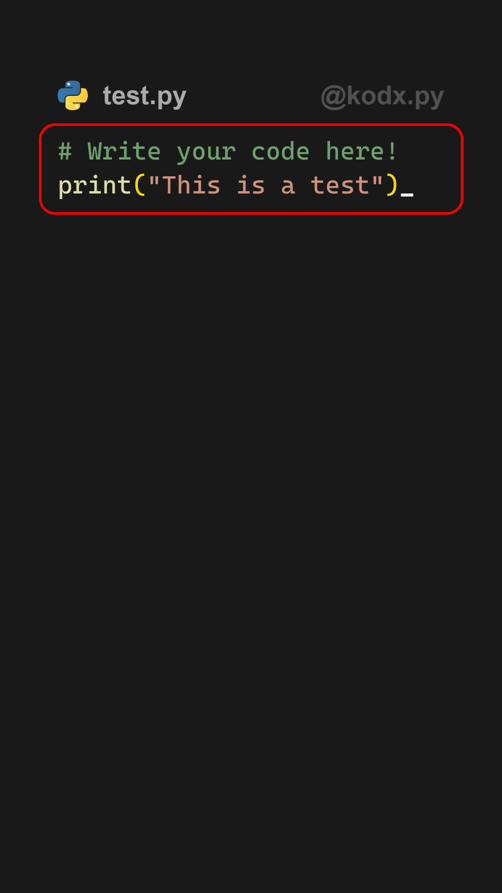
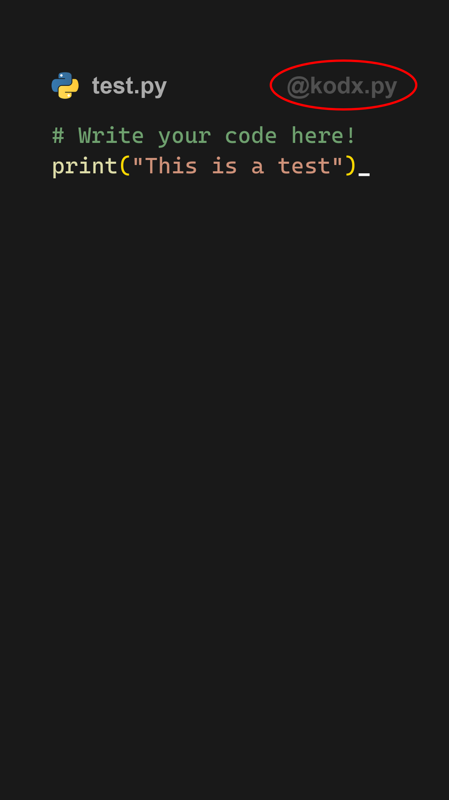
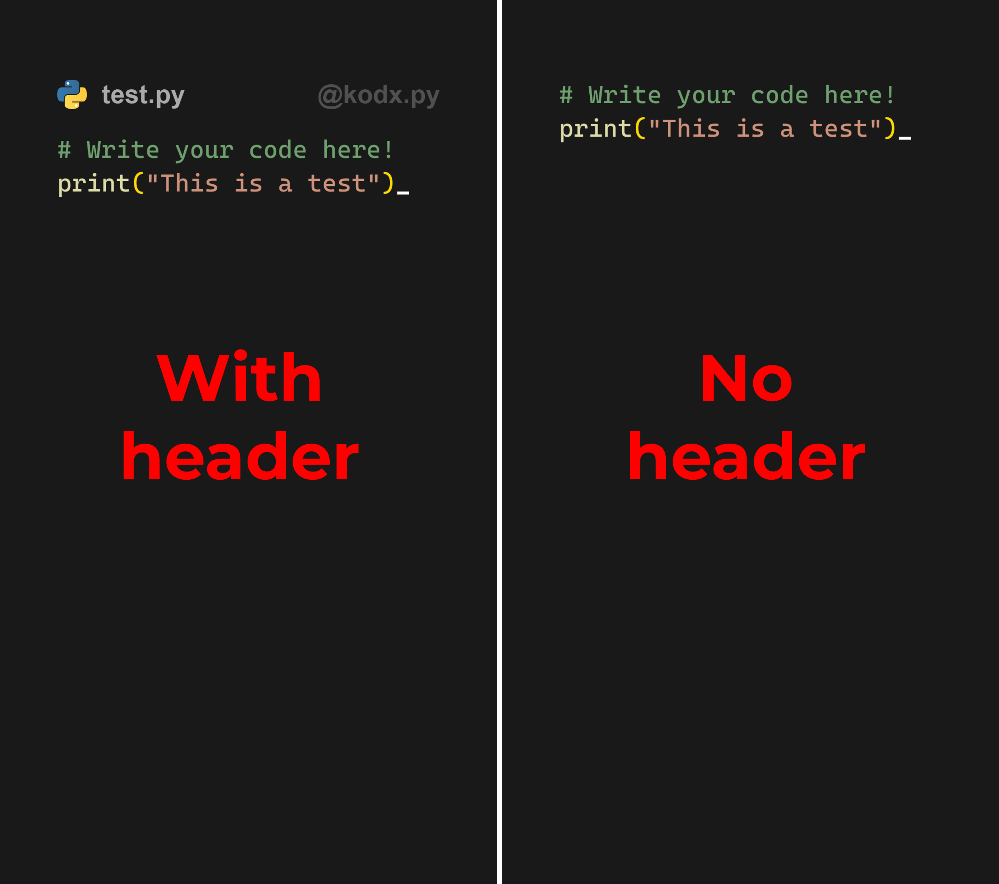

Settings
What you will find here
Here you will see a detailed definition of every one of all the settings you can modify to obtain the results you want in your animations.
All Settings
When you open the program for the first time, you will see the default settings. Tweak them to your liking, everything will autosave.
Here's a list with all the settings there are and their default values. Click on any of them to see more information.
| Setting | Default value |
|---|---|
| Code | See default |
| Title | test.py |
| Watermark | @kodx |
| Icon path | Default Python Logo |
| Show header | True |
| Show line numbers | False |
| First line number | 1 |
| Extra line numbers | 0 |
| Insert symbol | - |
| Terminal insert symbol | █ |
| Visual indentation spaces | 2 |
| In-file indentation spaces | 4 |
| Mode | vertical |
| Resolution | fullhd |
| Fps | 30 |
| x | 1080 |
| y | 1920 |
| Margin top | 9 |
| Margin left | 11.5 |
| Margin bottom | 40 |
| Margin right | 20 |
| Max terminal height | 65 |
| Code font size | 5 |
| Header size | 6 |
| Line separation | 2 |
| Gap icon-header | 3 |
| Gap header-content | 5 |
| Gap number line-code | 8 |
| Top terminal margin | 6 |
| Gap code-terminal | 5 |
| Cursor color | (255, 255, 255) |
| Background color | (25, 25, 25) |
| Terminal background color | (15, 15, 15) |
| Header color | (170, 170, 170) |
| Watermark color | (80, 80, 80) |
| Volume at lower level | 30 |
| Filename | video |
| Export path | "" |
| Only last frame | False |
Code

This is the code that will be animated. See scripting for more details.
The default value for code is # Type your code here! ## wait 5 for 25 wait 10\nprint('This is a test') ## wait 5 for voice wait 10
Title

The title that will appear next to the icon. This is not the filename. See filename details here. The title is hosted in the header, so hiding the header will hide the title as well.
Watermark

The watermark that will appear at the top right of the video.
Normally, use your username if you're sharing on social media.
Leave blank for no watermark. The watermark is hosted in the header, so hiding the header will hide the watermark as well.
Icon path

The icon that will appear at the top left of the image. The default icon is the Python logo. You can add your own PNG/JPG square image. If your image is not square, it will be stretched to be 1/1.
The icon is hosted in the header, so hiding the header will hide the icon as well.
Show header

You can decide whether to show or not the header.